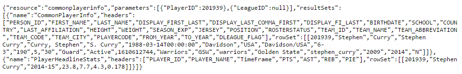
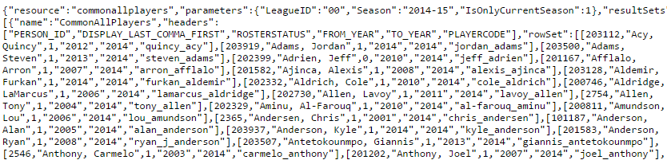
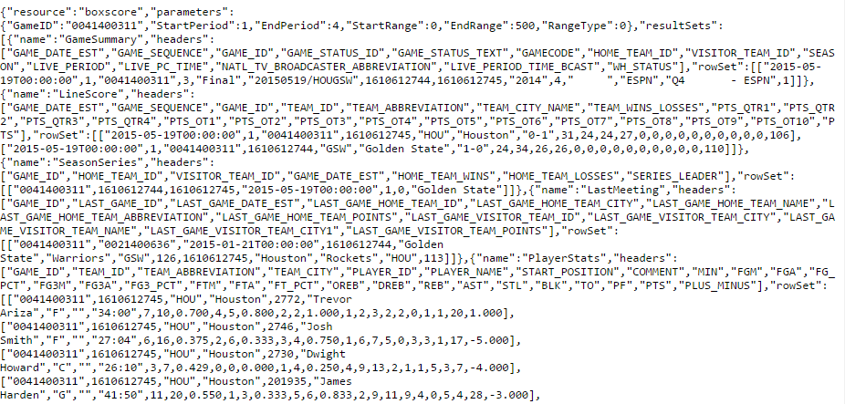

Connect with and use the NBA Stats API
Each return will be slightly different based off of your request made using a specific url and parameters, but all will have some of the same characteristics that I will point out below. This will help you in your coding to set milemarkers for finding the data that you wish to display.
To better view each example, hover over it to enlarge it.
 Here I have provided an example return based off of Stephen Curry. There are a few areas I would like to point out that will make your handling of these returns a lot easier.
Notice that the url (commonplayerinfo) and the parameters (PlayerID, LeagueID) are all listed. Following that is the "resultSets" which include an array for the header info and an array for the common player info. Header info displays the titles for each stat. Following the header info, you will notice "rowSet". This marks the start of the player's data. Notice that the common player info appears in the same order as to match the header info. For example, the second item in header is "FIRST_NAME" while the second item in common player data is "Stephen". Following the common player info, you will see PlayerHeadlineStats. This is the same process as above but with generalized data on the player.
 Here is an example return of all of the players listed in the league that were active during the 2014-15 season. For space purposes, I did not include a full picture of this return. This return is similar to the above, but now player data is limited and there is more than one player's data. Let's look at the similarities!
Once again the name on the database given to that url and parameters are listed first. Following, you'll see "resultSets" again, listing. This works exactly as is it did above. Headers displays the titles of the data for each player. Locate "rowSet" and you will notice that this starts the player's data. This time, instead of one array of data, each player has their own array. This url returns a lot of data and would take a bit more time to grab data from. The upside is that it offers every player's ID number. If you do not want to look up all IDs for a dictionary, this would be a great place to grab them in a call prior to finishing your site.
 In this final example, I used data from a request based off of a game rather than a player. As with above, you will notice the url name is identified along with the parameters. Once you hit "resultSets", you will see the headers for all of the results. Following this is the first "rowSets" which displays the specifics for GameSummary. The same is repeated for LineScore, SeasonSeries, and PlayerStats (this is where the example image is cut short, but more data would continue to display). Similar to common all player data, you will notice that the PlayerStats section arranges data by player per array.
Before you move on to the next page, I would suggest using any of the urls from the previous page along with their parameters to view more results. For practice, choose any of the potential request urls you plan to make on your site. If the results appear in a way that you would have expected and you can identify the milemarkers listed below, you are ready for the next section!
Potential exercises: get the common player data for Dennis Schroder, or get the play by play of the most recently played game.